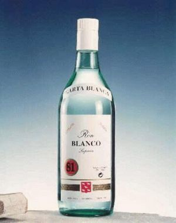

Ron
 De: La Frikipedia, la enciclopedia extremadamente seria.
De: La Frikipedia, la enciclopedia extremadamente seria.
| De la serie Elementos químicos:
|
|
|
| Nombre oficial:
|
Ron
|
| Otros nombres:
|
Dependiendo del lugar: Cubata, cuba, cacharro, copa...
|
| Serie alquímica:
|
B
|
| Descubridor:
|
Anónimo.
|
| Color en tabla:
|
Transparente
|
| Presente en:
|
Cubatas, mezclas, baterías de coches...
|
| Usos:
|
Varios, ya sea emborracharse o curar heridas
|
| Estado:
|
Comatoso
|
| Peso kg/puñao:
|
Es de mala educación preguntarle al ron su peso
|
| Estructura:
|
60% Alcohol, 40% Otras sustancias
|
| Abstracción:
|
Cuando baja y lo meas
|
| Humungoso:
|
No
|
«¡¡¡¿¿¿Pero por qué no queda ron???!!!»
~ Capitán Jack Sparow en un botellón
El Ron es una bebida creada en los latinos. Se suele usar en cuanto aprieta el calor y para refrescar el gaznate en las noches de buitreo por los garitos. Es la bebida predilecta de los Piratas cuando no se encuentran obedeciendo las ordenes de Bill Gates para dominar el mundo, usando el eMule o incluso el bloc de notas.
Historia del Ron
El ron nació en un lugar Americano, de cuyo nombre no nos podemos acordar debido a la borrachera del tío que lo inventó, en el s. XV. Cierto Pirata decidió mezclar un conjunto de sustancias alcohólicas dando lugar al Ron. Por fortuna, antes de emborracharse a conciencia dejó apuntada la fórmula en una caja de cereales. Fue fabricado en su bañera, con muchos litros de alcohol, y su fórmula química no ha variado apenas a lo largo de los años.
Tipos de Ron
Entre otros tipos de ron podemos destacar:
- Blanco: típico ron.
- Añejo (5,10,15 años...): Ron de alta calidad (como norma general, claro está), buen sabor y un color más oscuro que el primero.
- Breezer: que ya viene combinado y listo para tomar (siempre y cuando tenga un poco de hielo para enfriar).
- Barceló: sólo lo he visto en los anuncios.
Combinaciones a base de Ron
- Ron con coca-cola: es la bebida del machote, provoca menos resaca que el whisky y es dulce.
- Ron con Kas: se le ocurrió a un nenaza que no daba aguantado el divino sabor del ron.
- Ron con bebidas energéticas: Dios mio, el que haya creado ésto no tiene nombre.
- Ron con Ron: bebida de listos. Aderezar siempre con un poquito de hielo.
- Ron sin Ron: bebida mítica de la cual su sabor es desconocido.
- Ron con Limonada: el popular "Frankie". Bebida oportuna en épocas donde reina la escasez.
Acompañamientos
Se suele acompañar de un puro en los botellones nocturnos si se realiza en honor a un artista cubano famoso fallecido(Compay Segundo, Celia Cruz, Fidel Castro), con lo que te da un toque distinguido y de clase, que sólo poseen algunos como Arturo Fernández.
Consecuencias de un exceso de ron
Consecuencias de un exceso de ron, deberían leer el siguiente punto.
Hay que tener en cuenta que las mejoras compensan a las perdidas en un porcentaje muy amplio que no podemos calcular porque seguimos las directrices de la cuenta de la vieja
- Pérdida de visión
- Pérdida de equilibrio
- Pérdida de objetos varios
- Pérdida de la virginidad
- Pérdida de dignidad
- Pérdida de complejos
- Pérdida de localización
- Pérdida (llamada) de tus colegas para saber donde coño de metiste
- Pérdida de control del estómago (vómitos y náuseas?
- Mejora del atractivo de las mujeres (u hombres)
- Mejora de la sociabilidad del individuo
- Mejora el sabor de todo tipo de bebidas (incluso el peor de los garrafones
- Mejora de tu capacidad para insultar a la gente
- Mejora tu capacidad para dialogar con mujeres (u hombres)
Recomendaciones tras un exceso de ron
Ver articulo Resaca
¿Quien bebe Ron?

Anónimo, creador y gran defensor de esta bebida.
Marcas de Ron
 Ron blanco de marca "Ron Blanco". Absténganse de beberlo si no desean una resaca del quince.
- Ron Weasley
- Arehucas, mi niño
- Bacardi
- Negrita la negra es echárselo....
- Varadero
- Matusalem
- Santa Teresa este es bueno, te bajas la botella que ni te enteras
- Legendario (Que se llama así porque aunque te lo tomes solo y caliente, está rico)
- Ron Blanco (Que es un genérico)
- Almirante (Que es el del Mercadona)
- Rhumba (Que es el del Eroski)
- Ron Damón
- Velero (Que es el del DIA)
- Liberté (Que es el del Lidl)
- XXX (Que es el de garrafón)
- Ron Plata Premium (mas conocido como rpp en mi país, bebida del estudiante)
- Ron Brugal
- Ron Jamaica perfecto con canada dry(El del loro)
- ron medellin
- ron げこごさざしじすずせぜそぞた (muy popular en la república de ㅀ포ㅠㅠㅍㅎㄿ루ㅜㅛ)
Ver también
Autor(es):
- Krusher
- Nexo
- Cortocircuito
- Jowsh
- Meloh
- Frikiman
- Roms
- Viento
- Azulejos
- Nadaquever
Frikipedia 2005-2016, Licencia
GFDL 1.2 - Extraído por FrikiLeaks